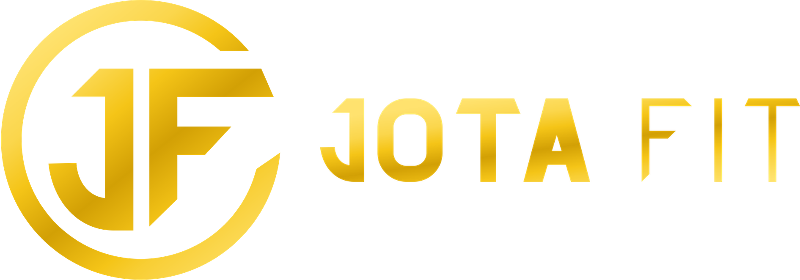
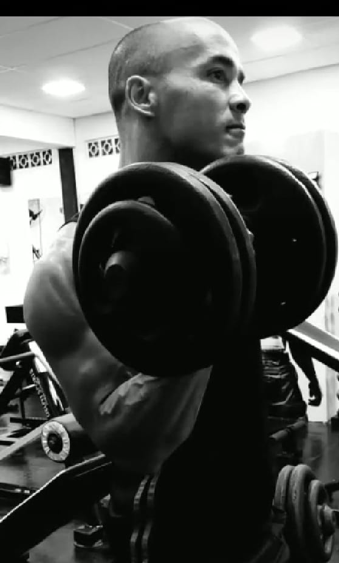

Menos achismo.
Mais resultado no seu corpo.
Consultoria de treino para mulheres 35+, com o Método Jota Fit: avaliação, treino sob medida e acompanhamento direto. Presencial em Guarulhos e online para todo o Brasil.

Você se reconhece aqui?
Quer firmar o corpo e mudar suas medidas
Treino de força bem feito, com progressão, e não treino aleatório que não leva a lugar nenhum.
Está na menopausa ou perto dela
O músculo é um grande aliado nessa fase. Treino pensado para cuidar da força, dos ossos e da disposição.
Tem medo ou dor ao treinar
Eu explico cada exercício, adapto o que for preciso e peço liberação do seu médico quando houver condição clínica.
Nunca sabe por onde começar
Do zero ao treino montado para a sua rotina, o seu nível e o equipamento que você tem.
Vive uma rotina corrida
Treino que cabe no seu dia e acompanhamento direto, para você não largar no meio do caminho.
Está grávida ou voltando do pós-parto
Treino de força é possível e útil, sempre com a liberação do seu obstetra e carga ajustada a você.
Comece pela sua avaliação
Leva 2 minutos. Você preenche as suas medidas e envia para o meu WhatsApp. Eu analiso e te respondo com uma conversa pessoal, não com um número solto.
É uma avaliação inicial, uma estimativa a partir de medidas. Não é diagnóstico e não substitui avaliação médica ou física completa.
Como eu trabalho
Um ciclo simples e repetido: avaliar, planejar, executar e ajustar. Clique em cada etapa para ver o que acontece.
Avaliação completa
É aqui que o seu plano nasce. Antes de qualquer treino, eu preciso entender você.
- Rotina, nível de treino, histórico e objetivo
- Ponto de partida registrado com fotos e medidas
- Se houver condição clínica, eu peço a liberação do seu médico
Treino sob medida
Nada de planilha pronta. O treino é montado só para você e entregue no aplicativo.
- De acordo com o local e os equipamentos que você tem
- Com orientação de como executar cada exercício
- Progressão planejada, para evoluir sem se machucar
Acompanhamento direto
Você não fica sozinha. Eu explico o porquê de cada exercício e estou por perto durante todo o processo.
- Suporte direto para tirar dúvidas na hora do treino
- Explicação simples, com base científica
- Presencial em Guarulhos ou online para todo o Brasil
Reavaliação a cada 15 dias
A balança sozinha não conta a história toda. A cada 15 dias eu comparo e ajusto.
- Fotos e medidas comparadas com o ponto de partida
- Ajuste de carga, exercícios e metas
- Você enxerga a evolução, mesmo quando o peso não muda
Você enxerga a evolução
A cada 15 dias eu comparo o seu ponto de partida com o agora. Assim a gente ajusta o treino com base no que mudou de verdade.
- Fotos de frente, de lado e de costas
- Medidas como cintura e quadril
- Cargas e repetições dos seus treinos
- Como você se sente na rotina e no corpo
O gráfico mostra a ideia do acompanhamento, não um resultado individual. Cada pessoa evolui no seu ritmo.
Aqui não tem achismo
Tudo que eu ensino vem de estudo conferido. Toque em cada cartão para ver o que a pesquisa diz.
Estudos conferidos no PubMed. Isto é informação, não é indicação médica: converse com seu médico antes de começar a treinar, principalmente se tiver alguma condição de saúde.
Você entende o que está fazendo
No meu Instagram eu explico o treino sem enrolação. É o mesmo jeito que levo para a consultoria.
Biomecânica e técnica
Por que o joelho dói no agachamento? Até onde descer no stiff? Eu mostro na prática.
02Ciência e mitos
Metabolismo lento, balança, canetas emagrecedoras: o que o estudo diz de verdade.
03Saúde da mulher
Menopausa, gestação e longevidade, com treino de força e com cuidado.
04Jota Responde
Perguntas reais de seguidoras respondidas com base científica.
anos
de profissão em Guarulhos
CREF 162847-G/SP
Oi, eu sou o Jota
Sou personal trainer e acredito que treino bom é o que você entende. Por isso eu explico o porquê de cada exercício, ajusto o plano a cada fase e acompanho de perto.
- Treino com base científica, sem modismo e sem promessa milagrosa
- Atendimento presencial em Guarulhos e online para todo o Brasil e exterior
- Acompanhamento direto, com reavaliação a cada 15 dias
Quem treina comigo conta
Antes eu tinha uma “bunda”, hoje estou muito feliz, amando e admirando o meu “glúteo”. Estou valorizando minha autoestima, porque cada vez mais meu corpinho está ficando mais harmonioso. [...] O seu profissionalismo é fora da curva, porque você não passa só o treino.
Eu tinha aquele super “pré-conceito” com a musculação, por conta de dores na lombar. [...] Você conduz as aulas me fazendo superar meus próprios limites, com toda paciência, porque eu tinha medo de fazer alguns exercícios. Essa confiança que me passou me motiva a buscar mais ainda meus resultados.
Só depois de treinar com sua orientação e acompanhamento percebi que faz toda a diferença treinar com um profissional competente. [...] Estou realizada de ver meu corpo sendo moldado pouco a pouco e chegando onde sempre quis. Mudou meu corpo e melhorou muito meu emocional.
Relatos de alunas, trechos de mensagens enviadas ao Jota. Cada pessoa responde de um jeito: os resultados variam.
Qual é o seu objetivo?
Perguntas frequentes
O treino é montado de acordo com o local e o equipamento que você tem. Na avaliação a gente define o melhor caminho.
Conversamos na avaliação. Quando houver uma condição clínica, eu peço a liberação do seu médico e adapto o treino.
Sim. O treino de força costuma ser indicado nessa fase para cuidar de músculos e ossos. Havendo condição clínica, o acompanhamento médico segue junto.
Treino de força pode fazer parte da gestação, com liberação do obstetra e carga ajustada a você e ao seu histórico.
Não. Eu passo orientações gerais de hábitos saudáveis e, quando for preciso um plano alimentar, indico um nutricionista.
Pode. A consultoria online funciona para todo o Brasil e também para o exterior.
Comece pela avaliação inicial aqui no site: você preenche as suas medidas e envia para o meu WhatsApp. Ou me chame direto. A gente conversa, eu entendo o seu objetivo e apresento como funciona e os planos.
Seu próximo treino começa aqui
Comece pela avaliação inicial ou me chame no WhatsApp. Eu te explico como a consultoria funciona.